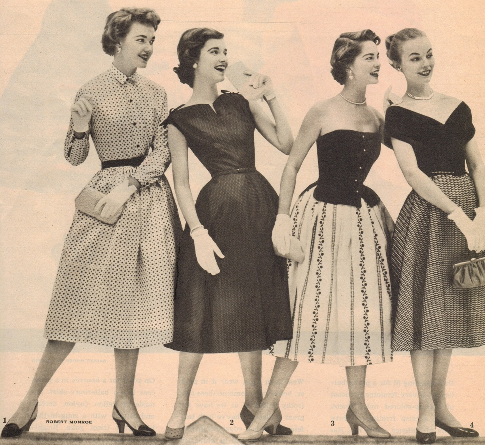

While colors are colors and we don't expect them to change over the years.
But they do!
Looking back at the 1950's we can see that they not only used funny names,
but they used colors that were a muted or rusted version of what we see today.
Now while they had a neat color scheme goin'. Now that we are in the 20th century we are saying,
"Well show me a picture!" But they were still in the times of black and white photography.
So this is what we would commonly see when looking back by way of photograph.
You might also notice the different fashion and styles.
